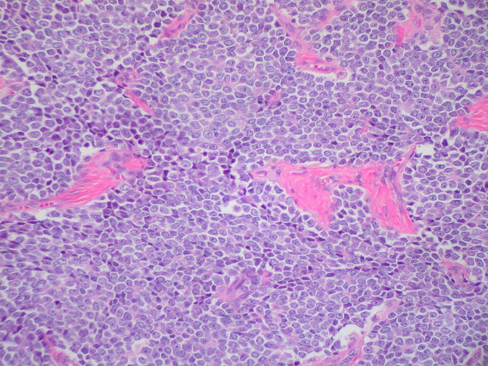

Información divulgativa. No sustituye la valoración de tu equipo médico ni sirve para decidir un tratamiento.


En resumen
| Frecuencia | Segundo tumor óseo más frecuente en jóvenes; edad media de 15 años |
| Dónde | Pelvis, fémur, costillas, columna, también partes blandas |
| Alteración | Fusión EWSR1-FLI1 (85 %) u otras de EWSR1 |
| Síntomas | Dolor, hinchazón, a veces fiebre (se confunde con infección) |
| Tratamiento | Quimioterapia (VDC/IE), cirugía y/o radioterapia |
| Supervivencia | 70-75 % localizado; 30 % con metástasis |
Tratamiento
Quimioterapia intensiva por ciclos alternos (vincristina, doxorrubicina y ciclofosfamida con ifosfamida y etopósido, régimen de intervalo comprimido; o VIDE), control local con cirugía y/o radioterapia (es un tumor radiosensible), y más quimioterapia. En recaídas: irinotecán con temozolomida, quimioterapia a dosis altas, ensayos clínicos.
Los sarcomas de células redondas con otras fusiones (CIC, BCOR) se consideran hoy entidades distintas.
Ver también: Osteosarcoma, Sarcomas, Cáncer infantil.
Historia · Medicapedia
Sarcoma de Ewing en la historia de la medicina
Cómo se descubrió, quién lo investigó y cómo cambió su tratamiento a lo largo de los siglos, contado en Medicapedia, nuestra web hermana de historia de la medicina.
Leer la historia en Medicapedia ↗Fuentes
- Strauss SJ, et al. Bone sarcomas: ESMO-EURACAN-GENTURIS-ERN PaedCan Clinical Practice Guideline. Ann Oncol. 2021;32:1520-1536.
- Grünewald TGP, et al. Ewing sarcoma. Nat Rev Dis Primers. 2018;4:5.
Guías y documentos recientes (2024-2026)
- SEOM y REDECAN. Las cifras del cáncer en España 2026. Madrid: SEOM; 2026. seom.org
Fuentes revisadas y actualizadas en noviembre de 2026.